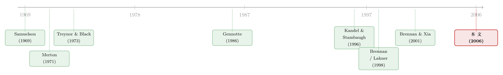

你以为在问「分析师靠不靠谱」，其实在解一道学习的难题
本文读的是 Cvitanić, Lazrak, Martellini & Zapatero (2006, RFS)：当一个非短视的 CRRA 投资者不知道股票真实的 α（超额收益），只能一边观察价格、一边用贝叶斯方法学习时，他的最优组合存在闭式解——而且「学习」本身会凭空长出一块对冲需求（hedging demand），可以占到总持仓相当大的比例。作者用这套公式，把分析师推荐当成 α 的估计值，做了两个实证练习：事前看，最优配置带来的效用收益（以确定性等价衡量）很可观，尤其在长期；事后看，分析师推荐其实没多大用，只有在覆盖某只股票的分析师足够多时才略微有点价值。
1 引言：一个被反复问、却很少被「正确」问的问题
分析师的推荐到底值不值钱？这大概是华尔街和学术界争了几十年的老问题。Womack (1996) 说「买入」评级后股价会涨、「卖出」评级后股价会跌，看起来推荐有信息含量；可一旦你把交易成本、把「人人都看得到这条推荐」算进去，这点价值还剩多少，就众说纷纭了。
但这篇文章想说的是：这个问题，本身就被问错了。
「推荐里有没有信息」是一个预测问题；可一个真正要拿钱去投的人，面对的不是预测问题，而是一个组合选择问题——而且是一个最棘手的组合选择问题。因为他并不知道每只股票真实的 α 是多少。分析师给的，充其量是一个带噪声的先验。投资者要做的，是拿着这个先验上场，然后随着价格一天天走出来，一边交易一边更新自己的判断。
于是问题就从「推荐准不准」，变成了一个更深的东西：当你对参数本身都心里没底、还要在不确定中持续学习时，最优的仓位该怎么摆？ 这正是连续时间组合选择里最难啃、长期只能靠数值方法硬算的一块（关于「不再相信自己估出来的均值」这件事，可参见《当你不再相信自己估出来的那个均值》）。
这篇文章的贡献，一言以蔽之：它把这道题解出了闭式解，而且能容纳任意多只资产、容纳 α 先验之间的相关性，还不丢掉那块至关重要的对冲需求。然后，它才回过头去，用这把尺子量一量分析师的推荐。
首先，我们得把那张被刻意简化过的市场图景看清楚。
2 一张被简化的市场图景
经济里有 n+1 只风险资产和一只无风险债券 B，后者按常数利率 r 增长：dB/B = r dt。
S_0 是市场组合（或任何可交易的基准），它只承担市场风险：
$$\frac{dS_0}{S_0} = \mu_0\,dt + \sigma_0\,dW_0$$
其余 n 只个股，则在市场风险之外多了一份自己的特质风险：
$$\frac{dS_i}{S_i} = \mu_i\,dt + \sigma_i\,dW_0 + \sigma_{\varepsilon i}\,dW_i,\quad i=1,\dots,n$$
这里 \(W_0\) 是所有股票共担的布朗运动（市场风险），\(W_i\) 是彼此独立、也与 \(W_0\) 独立的特质冲击。关键的假设藏在「投资者能看到什么」里：他能观察到利率 r、波动率结构 σ、以及所有价格；但他看不到期望收益向量 \(\mu=(\mu_0,\dots,\mu_n)\)，也看不到噪声 \(W\)（否则他立刻就能反推出 μ）。
为什么单单把 μ 藏起来？因为金融计量学里有个近乎共识的事实：方差好估，期望收益极难估（Merton, 1980）。把已知的东西当已知、把真正难的东西当未知，这个设定既贴合现实，也让数学可解。
接着，作者引入「风险溢价」向量
$$\theta := \sigma^{-1}(\mu - r\mathbf{1})$$
并假设投资者对 θ（等价地对 μ）持有一个高斯先验，均值为 m、方差–协方差矩阵为 Σ。这就是贝叶斯框架的起点。
最妙的一步，是把 μ 翻译成更接地气的语言。在完全信息下，Merton (1973) 的 ICAPM 成立；而本文允许价格偏离 ICAPM，于是每只股票的期望收益可以拆成：
$$\mu_i = r + \beta_i(\mu_0 - r) + \alpha_i$$
前一块是「正常收益」（由 beta 驱动），后一块 \(\alpha_i\) 就是这只股票的错误定价。在这个单因子、残差不相关的设定下，风险溢价直接和 α 挂钩：
$$\theta_i = \frac{\alpha_i}{\sigma_{\varepsilon i}},\qquad \theta_0 = \frac{\mu_0 - r}{\sigma_0}$$
这一步看似只是换符号，实则极其重要：它让整套结果可以用 α 来表达——而 α，恰恰是组合管理行业里最熟悉、也比单个 \(\mu_i\) 更容易估计的量。分析师推荐，正好可以塞进 α 的位置上。
投资者是 CRRA、非短视的，对终端财富有幂效用：
$$u(X_T) = \frac{X_T^{1-a}}{1-a}$$
a=1 是对数（短视）效用；本文盯住更有意思的 a>1，也就是比对数投资者更厌恶风险的人。记住这个条件，后面所有反直觉的结论都从它身上长出来。
3 真正关键的一步：当「学习」凭空长出了对冲需求
现在来到全文的心脏。
投资者看不到 μ，但他能看价格。价格每走一步，都带来一点关于 μ 的信息，于是他用贝叶斯法则不断更新自己的看法。因为先验是高斯的、收益是高斯的，更新过程恰好是经典的卡尔曼–布西滤波（Kalman–Bucy filtering）：后验精度 = 先验精度 + 累积的信号精度。
把先验协方差对角化，\(\Sigma = P'DP\)，记 \(d_i\) 为对角元（即 Σ 的特征值）。那么 θ 的条件方差会沿着一条确定性的轨迹衰减：
$$\gamma_i(t) = \frac{d_i}{1+d_i t}$$
直觉很干净：\(t=0\) 时条件方差就是先验方差 \(d_i\)；随着时间推移、价格样本越积越多，\(\gamma_i(t)\to 0\)——你学得越久，对 α 就越有把握。
但真正关键的一步在于：这个未来还会继续学习的事实，会反过来改变你今天的仓位。一个理性的非短视投资者，会预先把「将来我会学到更多」纳入决策。作者用鞅方法（沿 Cox–Huang, 1989 与 Karatzas–Lehoczky–Shreve, 1987 的路子）解出最优权重：
其中那块「有效风险厌恶」的核心，是这个标量：
$$A_i(t) = a - (1-a)\gamma_i(t)(T-t)$$
注意，因为矩阵 P 来自 Σ 的特征分解，做一次它就是一次普通的数值运算，和矩阵求逆同一难度。所以这个公式和 Merton (1971) 一样「显式」——而且资产维度越高，它相对于数值方法的优势越大。这正是本文解决了维数灾难的地方：Brennan & Xia (2001) 那类 PDE 数值方法在多资产时几乎寸步难行，这里却一步到位。
那对冲需求在哪里？把最优解减去「短视解」就出来了。一个把当前看法 \(\theta(t)\) 直接当成真值的短视投资者会持有 \(\pi^m(t)=a^{-1}(\sigma')^{-1}\theta(t)\)，二者之差就是对冲需求 \(\pi^h(t)=\hat\pi(t)-\pi^m(t)\)。
最干净的版本出现在先验不相关时。此时个股的最优持仓是
$$\hat\pi_i = \frac{\alpha_i}{\sigma_{\varepsilon i}^2 A_i}$$
而短视投资者会持有 \(\pi^m_i = \alpha_i/(\sigma_{\varepsilon i}^2 a)\)。关键就在分母上 A_i 和 a 的差别：当 a>1 时，\((1-a)<0\)，于是 \(A_i = a + (a-1)\gamma_i(T-t) > a\)。有效风险厌恶被学习抬高了，所以非短视投资者持有的，比短视投资者更少。写成对冲需求的显式形式就是：
$$\pi^h_i = \frac{\alpha_i}{\sigma_{\varepsilon i}^2 a}\left[\frac{(1-a)d_i T}{a-(1-a)d_i T}\right]$$
方括号里那项对 a>1 恒为负——它和 α 反号，把仓位往回拉。
为什么学习会让你少冒险、而不是多冒险？这是全文最反直觉、也最漂亮的一点。即便真实收益是 i.i.d. 的，学习中的投资者却会感知到正的序列自相关：一次高收益既是好的实现，也是「期望收益其实更高」的好消息，于是他上调对未来的预期；一次低收益则相反。这种「好消息叠加好消息」让长期收益看起来比真实的 i.i.d. 更危险。具体地，在没有错误定价时，市场收益的累积方差是
$$\mathrm{Var}\!\left[\log\frac{S_0(t)}{S_0(0)}\right] = \sigma_0^2 t + \sigma_0^2 d_0 t^2$$
真实 i.i.d. 收益的累积方差随时间线性增长；可在学习者眼里，它多出了一个 \(t^2\) 项，二次增长。长期看，市场比它表面上更凶险。于是一个 a>1 的人，会为了对冲这份「估计误差风险」而少持有市场组合——这就是那块非正的市场对冲需求：
$$\pi^h_0 = \frac{\mu_0 - r}{\sigma_0^2 a}\left[\frac{(1-a)d_0 T}{a-(1-a)d_0 T}\right]$$
（这种「学习如何重塑连续时间下的对冲需求」的思路，与《把投资组合的「天书」解到只剩一个常微分方程》是同一脉相承的关怀。）
4 相关性的两副面孔
如果不同股票的 α 先验之间存在相关，故事会更微妙。作者把它拆成两条相反的渠道，这是本文容易被忽略、却很有味道的一节。
一方面是交叉学习（cross-learning）：无论相关的正负，α 先验之间的相关都会让你「从一只股票的价格里顺便学到另一只」，等效于同时降低了两者的不确定性。学得更快，就更有动力去投每一只被低估的股票。
另一方面是估计风险的分散：为了分散估计误差，α 之间正相关会让你降低这些错误定价资产的权重，负相关则反过来提高它们的权重。
两股力量方向相反，所以相关性对持仓的净影响是混合的——并由此逼出一些反直觉的最优持仓。比如，你可能会去做多一只定价公允、甚至 α 为负的股票：只要另一只股票有更高的期望 α、且与它负相关。你也可能去做空一只正 α 的股票：只要存在另一只 α 更高、且与它正相关的股票。最优行为，未必长得「顺眼」。
5 把公式喂给分析师：两个实证练习
有了能处理大量资产的闭式解，作者才得以把分析师推荐请上场。他们用 IBES 数据库里的分析师推荐，作为个股 α 的估计，做了两个互补的练习。
事前（ex ante）练习沿 Kandel & Stambaugh (1996) 的思路：先估出个股参数，再计算一个确定性等价（certainty equivalent，即 McCulloch & Rossi (1990) 意义下「需要额外补给的初始财富」）——一个采用「朴素、次优」策略的 CRRA 投资者，得拿到多少额外的初始财富，才能达到本文最优策略带来的效用？这里的「朴素」策略，就是对正 α 股票做多、对负 α 股票做空。结论是：最优配置带来的效用收益很可观，尤其在长期。
事后（ex post）练习则更诚实地拷问推荐本身：让一个 CRRA 投资者真的拿分析师推荐隐含的 α 去投、并不断再平衡，算出他实现的平均效用（作为期望效用的近似），再和「只投市场组合 + 无风险资产」的基准比。结论略显尴尬：分析师推荐总体上只是边际有用（marginally useful）；而且只有当覆盖某只股票的分析师足够多时，推荐才显得更有价值一些。
本文提供的正文在实证一节处被截断，因此上面只能转述其方向性结论（「可观」「边际有用」「人多更有用」），无法给出确定性等价的具体数值或 t 值。我没有也不会替它编造这些量级——理论部分的每一个公式都来自正文，实证部分则只报告它明确陈述过的定性结果。
值得玩味的是：事前与事后的反差，恰恰把全文的核心点烘托了出来。只要 α 真的非零，最优配置的价值就很大（事前）；可现实里分析师给出的 α，质量并不足以兑现这份价值（事后）。换句话说，问题从来不在「方法值不值钱」，而在「信号好不好」。（关于分析师预期误差本身有多大、又如何被市场消化，可对照《不需要那些「玄学风险」》。）
6 文献脉络
这条研究线的根，扎在 Samuelson (1969) 和 Merton (1971) 奠基的跨期资产配置上。把贝叶斯思想引入参数估计，最早是 Zellner & Chetty (1965)、Klein & Bawa (1976)、Brown (1979) 在静态框架里做的；而把「用证券分析改进组合」写成可操作公式的，是 Treynor & Black (1973)——本文的个股持仓公式，正可以看作它的一个动态、带贝叶斯更新的版本（Black & Litterman (1991, 1992) 则是它在静态下的另一种延展）。

离散时间这一支枝繁叶茂：Kandel & Stambaugh (1996)、Pástor & Stambaugh (1999, 2000)、Barberis (2000)、Pástor (2000)、Baks-Metrick-Wachter (2001)、Jones & Shanken (2005) 把不完全信息下的组合问题做得很透，但学习诱导的对冲需求在他们的最优持仓里始终缺席。连续时间这一支则从 Detemple (1986)、Dothan & Feldman (1986)、Gennotte (1986) 三篇开山之作起步。真正贴近本文的，是把鞅方法引入带参数不确定性的组合问题的 Lakner (1998)、用校准模型评估对冲需求量级的 Brennan (1998)、求出单资产闭式解的 Rogers (2001)，以及用数值方法处理多资产的 Brennan & Xia (2001) 与 Xia (2001)。
本文所处的位置，因此非常清楚：它继承了 Brennan & Xia (2001) 的精神，却用更强（但更可解）的假设——i.i.d. 真实收益、高斯先验、已知方差——换来了任意多资产的闭式解，把维数灾难一举抹平，同时保住了对冲需求与 α 先验相关性这两块别人要么算不动、要么直接丢掉的东西。
7 评论与延伸（Q&A + 研究方向）
(a) 几个可能的疑问
Q：这和「拿估计出来的 α 直接做均值方差最优化」到底差在哪？
差在两层。第一，本文承认 α 是未知参数而非已知真值，投资者会持续用价格去学习它；第二，正因为有学习，非短视投资者会预先调整仓位去对冲「估计误差风险」，于是凭空多出一块对冲需求。普通的「即插即用」最优化，恰恰是把 α 当真值的那个短视解 \(\pi^m\)，丢掉了这块。
Q：为什么「学习」让我少买市场，而不是多买？
因为学习让投资者感知到正的序列自相关：好收益被解读成「未来期望更高」的好消息，坏收益则相反。这使长期市场收益的累积方差从线性（\(\sigma_0^2 t\)）变成二次（\(+\,\sigma_0^2 d_0 t^2\)），长期看更凶险。一个比对数投资者更厌恶风险（
a>1）的人，自然会少持有以对冲这份风险。
Q：对冲需求一定是负的吗？
对市场组合且无错误定价时，它非正——这是上面那个感知自相关的直接后果。对个股则要看 α 的符号：对冲需求始终与 α 反号，作用是把头寸往零的方向拉，而不是固定为负。
Q：闭式解是免费的吗？它的代价在哪？
不免费。代价是比 Brennan & Xia (2001) 更强的假设：真实收益 i.i.d.、先验高斯、方差已知。Brennan & Xia 允许用高斯混合来刻画「对任何定价模型都不太信」，本文只对应他们所谓的「纯先验分布」。可解性是用一般性换来的。
Q：「分析师推荐没用」和 Womack (1996) 说推荐有投资价值，矛盾吗？
不矛盾，因为问的不是一回事。Womack 量的是推荐前后的异常收益；本文量的是一个会再平衡、付交易成本的 CRRA 投资者拿推荐去投，能比「只买市场」多得多少效用。前者可以为正，后者却可能被噪声和成本吃到只剩「边际有用」——尤其当覆盖的分析师太少时。
Q：为什么非要 a>1？
因为
a=1（对数效用）的投资者是短视的，对冲需求恰好为零，整套故事就消失了。只有比对数更厌恶风险的人，才会因为「未来要学习」而今天就调整仓位。这也是为什么作者一开始就把a=1放在一边、专攻a>1。
(b) 几个可能的研究问题与提案
1. 把这套闭式解搬进公司债市场。
【经济故事】公司债的「α」可以来自信用利差中无法被久期、评级、流动性解释的那一块。债券投资者对这块超额收益的不确定性，可能比股票更大，学习诱导的对冲需求理应更突出。 【可行性】中。
TRACE成交数据 + 利差分解可构造 α 的先验；难点在于公司债的特质波动 \(\sigma_{\varepsilon i}\) 随流动性时变，会破坏「方差已知」的闭式条件，可能需要分段近似。
2. 用外资持有人/外资流向替代分析师推荐当 α 信号。
【经济故事】如果外资进出确实携带个股层面的信息，那么把它塞进 α 的位置，重做本文的事前/事后练习，就能直接量出「外资信号」对一个理性投资者的经济价值——比单纯的收益预测回归更有决策含义。 【可行性】中。需要个股层面的外资持仓面板（如 FactSet/EPFR 或监管申报），识别上要小心外资流向与价格的内生性；事后效用框架本身是干净的。
3. 把流动性作为一个额外的「学习维度」。
【经济故事】投资者不仅要学 α，可能也在学一只资产的流动性状态。把 \(\sigma_{\varepsilon i}\) 设成隐状态、让投资者同时滤波 α 和流动性，能看出「对流动性的不确定」会不会也长出一块对冲需求。 【可行性】低到中。一旦让方差也未知、且时变，闭式解大概率不保，只能退回数值或近似——但这正是本文留下的最自然的缺口。
4. 用机器学习的 α 预测，替分析师推荐做一次「经济价值」体检。
【经济故事】既然本文已证明「方法值钱、信号未必」，那么把更现代的 α 预测（机器学习横截面预测）喂进同一套确定性等价框架，就能在统一的效用尺度上比较不同 α 信号的真实价值，而不是各自报各自的夏普比率。 【可行性】高。预测端有大量现成工作，本文的事前/事后效用框架可直接复用，是一个 doable 的对接。
评论：贡献、担忧与我想看到的下一步
贡献是清楚的：在一个长期只能靠 PDE 数值硬算的问题上，给出了一个能容纳任意多资产、还保住对冲需求与先验相关性的闭式解，并第一次把它和分析师推荐这种现实信号对接，用确定性等价把「方法的价值」和「信号的价值」干净地分了开。那个「学习让长期市场显得更危险、于是 a>1 的人少持市场」的机制，既漂亮又有教育意义。
担忧主要在那几条换可解性的假设上。真实收益 i.i.d.、方差完全已知、先验严格高斯——任何一条松动，闭式解都可能崩塌。尤其「方差已知」在公司债、在危机期、在任何流动性会突变的场景里都很勉强；而把分析师推荐线性映射成 α，本身就是一个强假设，事后练习里那个「边际有用」的结论，有多少是推荐质量差、有多少是这个映射太粗糙，文中难以分开。
我想看到的下一步，是把这套框架用在「信号质量本身也在变」的环境里：当 α 先验的可信度随时间、随覆盖人数、随市场状态起伏时，对冲需求会怎样呼吸。本文已经证明了「只要 α 真、价值就大」；那么下一个真正值钱的问题，是如何在事前就判断手里的 α 到底有多真——这恰恰是它留给后来者最锋利的那道缺口。
参考文献
Black, F., & Litterman, R. (1992). Global Portfolio Optimization. Financial Analysts Journal 48(5), 28–43.
Brennan, M. (1998). The Role of Learning in Dynamic Portfolio Decisions. European Economic Review 1, 295–306.
Brennan, M., & Xia, Y. (2001). Assessing Asset Pricing Anomalies. Review of Financial Studies 14, 905–945.
Brown, S. (1979). Optimal Portfolio Choice Under Uncertainty: A Bayesian Approach. In V. Bawa, S. Brown & R. Klein (eds.), Estimation Risk and Optimal Portfolio Choice, North-Holland.
Cox, J. C., & Huang, C.-F. (1989). Optimal Consumption and Portfolio Policies when Asset Prices Follow a Diffusion Process. Journal of Economic Theory 49, 33–83.
Gennotte, G. (1986). Optimal Portfolio Choice Under Incomplete Information. Journal of Finance 41, 733–746.
Kandel, S., & Stambaugh, R. (1996). On the Predictability of Stock Returns: An Asset Allocation Perspective. Journal of Finance 51, 385–424.
Karatzas, I., Lehoczky, J. P., & Shreve, S. E. (1987). Optimal Portfolio and Consumption Decisions for a 'Small Investor' on a Finite Horizon. SIAM Journal of Control and Optimization 25, 1557–1586.
Klein, R. W., & Bawa, V. S. (1976). The Effect of Estimation Risk on Optimal Portfolio Choice. Journal of Financial Economics 3, 215–231.
Lakner, P. (1998). Optimal Trading Strategy for an Investor: The Case of Partial Information. Stochastic Processes and their Applications 76, 77–97.
McCulloch, R., & Rossi, P. (1990). Posterior, Predictive, and Utility-Based Approaches to Testing the Arbitrage Pricing Theory. Journal of Financial Economics 28, 7–38.
Merton, R. C. (1971). Optimum Consumption and Portfolio Rules in a Continuous-Time Model. Journal of Economic Theory 3, 373–413.
Merton, R. C. (1973). An Intertemporal Capital Asset Pricing Model. Econometrica 41, 867–888.
Merton, R. (1980). On Estimating the Expected Return on the Market: An Exploratory Investigation. Journal of Financial Economics 8, 323–362.
Rogers, L. C. G. (2001). The Relaxed Investor and Parameter Uncertainty. Finance and Stochastics 5, 131–154.
Samuelson, P. (1969). Lifetime Portfolio Selection by Dynamic Stochastic Programming. Review of Economics and Statistics 51, 239–246.
Treynor, J., & Black, F. (1973). How to Use Security Analysis to Improve Portfolio Selection. Journal of Business 46, 66–88.
Womack, K. (1996). Do Analysts' Recommendations Have Investment Value? Journal of Finance 51, 137–167.
Xia, Y. (2001). Learning About Predictability: The Effect of Parameter Uncertainty on Dynamic Asset Allocation. Journal of Finance 56, 205–246.